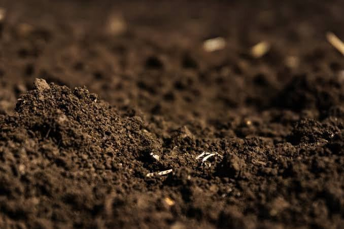
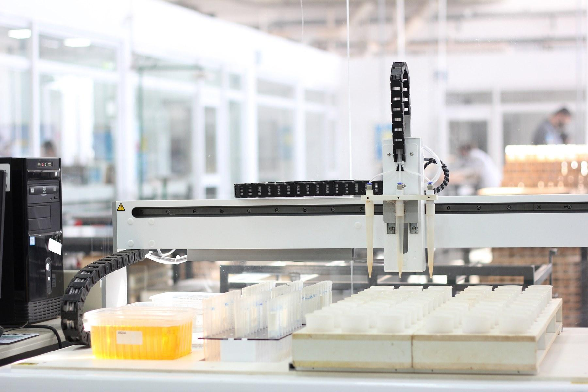
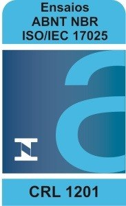
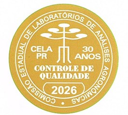
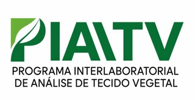
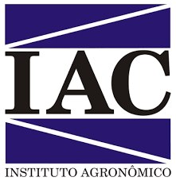
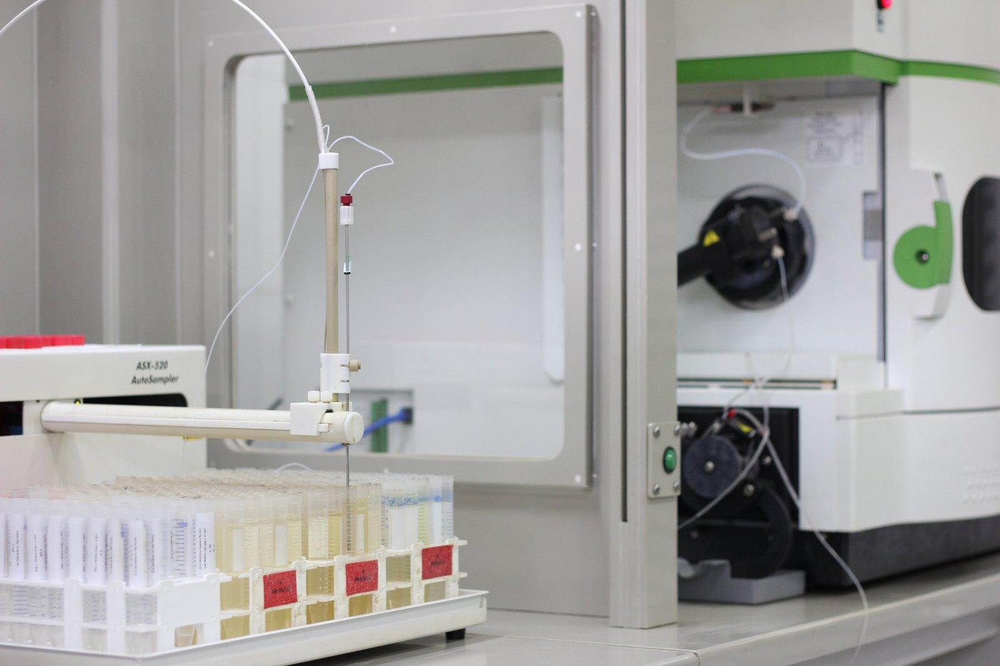
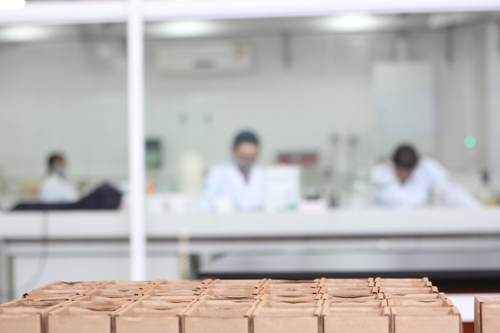
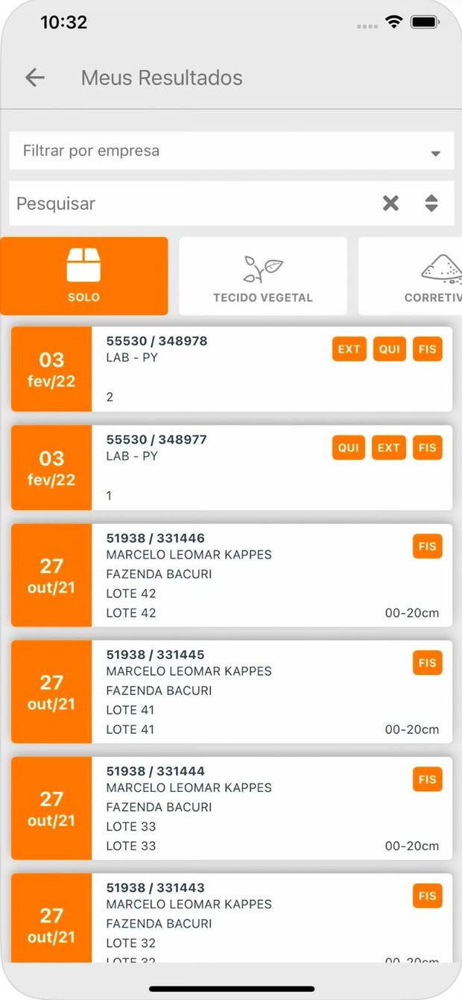
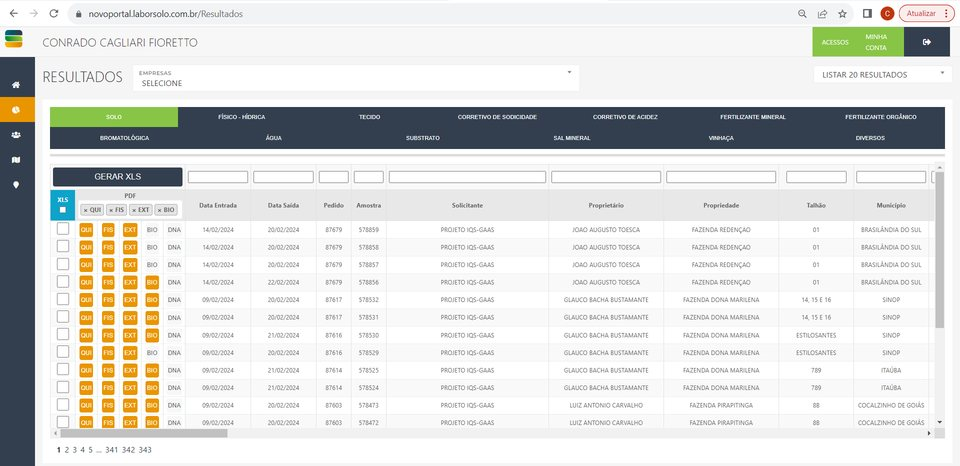

Transformaranálises emdecisões.
Solo, planta, insumos, água e nutrição animal em um só laboratório, com acreditação ISO/IEC 17025 em solo e tecido vegetal, registro no MAPA para fertilizantes e corretivos e mais de três décadas dedicadas à análise agronômica.
Qual análise eu preciso?
Comece pela pergunta que você quer responder. A fertilidade do solo tem três pilares (químico, físico e biológico) e cada situação pede uma combinação diferente.
Análises indicadas
Do pedido ao laudo
Conte o objetivo e a área. A equipe Laborsolo indica o conjunto certo de análises e o protocolo de coleta.
Cada análise tem profundidade, quantidade e conservação próprias. O laboratório analisa o que recebe: a coleta define o resultado.
Pelos Correios, por transportadora ou entregue na sede: Av. Tiradentes, 1770, Londrina/PR.
Laudo no portal do cliente, com histórico e exportação para Excel, e suporte de agrônomos para transformar o resultado em decisão.
Análises que realizamos.
Para cada análise: a pergunta que ela responde, quando usar, como coletar e o laudo real entregue ao cliente.

O solo visto por inteiro.
Química, física e biologia em leituras complementares. Sair do resultado pontual e chegar a um diagnóstico do sistema produtivo.
- QuímicaDisponibilidade e equilíbrio
Fertilidade, nutrientes, acidez e as relações que condicionam o desenvolvimento das plantas.
- FísicaEstrutura, água e ar
Granulometria e físico-hídrica para compreender porosidade, retenção de água e condições ao desenvolvimento radicular.
- BiologiaAtividade e comunidade
Três níveis de leitura da vida do solo, da atividade geral à identificação da comunidade microbiana por DNA.
O que a planta está dizendo.
A análise de tecido vegetal mostra o que a planta efetivamente absorveu. Com os bancos DRIS da Laborsolo, o resultado foliar vira uma leitura de equilíbrio e de prioridade nutricional.
- +20 anosde calibração e refinamento
- +30 culturascom interpretação por DRIS
Protocolos de coleta foliar
A folha certa, na posição certa: cada cultura tem sua folha índice. Baixe o protocolo antes de ir a campo.
Ver todos os protocolos
Precisão começa no processo.
Tecnologia, rotina analítica e controle de qualidade conectados para sustentar resultados consistentes e úteis ao campo.
Confiabilidade construída com método.
Acreditação ISO/IEC 17025 desde 2017 nas matrizes solo e tecido vegetal, registro no MAPA para análises de fertilizantes e corretivos, além de programas interlaboratoriais.




Registro MAPA · PR-00833
Análises de fertilizantes e corretivos para o MAPA.
Baixar portfólio MAPAPDF · 11 páginas

Muito além de um laboratório.
Referência nacional em análises agronômicas, a Laborsolo atua como parceira para transformar dados laboratoriais em informação útil à tomada de decisão.
- Amplitude
- Solo, tecido vegetal, fertilizantes, corretivos, condicionadores, água, alimentação animal e outras matrizes.
- Confiabilidade
- Controles de qualidade, acreditação e programas interlaboratoriais.
- Decisão
- Informação para ganhar eficiência, reduzir desperdícios e orientar o manejo.
Seus resultados, onde você estiver.
O portal do cliente organiza laudos, amostras e histórico para consulta, acompanhamento e integração ao trabalho de campo e à gestão.
- Portal online
- Aplicativo
- Resultados por e-mail
- Exportação para Excel
- Histórico das análises
- Gestão das amostras


Conteúdo técnico para decidir melhor.
E-books gratuitos da Laborsolo sobre as análises que mudam a leitura do solo e da planta.
Distribuição gratuita. Preencha um cadastro rápido e o PDF baixa na hora.
Instagram @laborsoloLinkedIn LaborsoloYouTube LaborsoloFale com a equipe comercial.
Orçamentos, prazos, coleta e envio de amostras. Respondemos pelo canal que for mais prático para você.